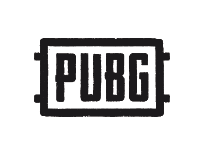

PUBGM PUBGM

pubg
PUBG MOBILE is a Battle Royale mobile game created independently by Lightspeed & Quantum Studios of Tencent Game, officially licensed by PLAYERUNKNOWN’S BATTLEGROUNDS. It was released globally in March 2018. Built with Unreal Engine 4, PUBG MOBILE focuses on visual quality, maps, shooting experience, and other aspects, providing an all-rounded surreal Battle Royale experience to players. A hundred players will land on the battleground to begin an intense yet fun journey. Each player is required to scavenge survival supplies, as well as to exploit the maximum potential of the map terrain, vehicles, and items to become the last team standing on the battleground. Check your heartbeat and be on guard as the playzone begins to shrink. Multiple maps are available for players to choose from, ranging from Erangel, Miramar, Sanhok, Livik, and many more. Don't forget about the array of gameplay that awaits your exploration! Till today, the influence of PUBG MOBILE does not merely serve its purpose as a game, it is also a hub that connects players from all over the world and a brand that encourages players to live to their fullest.
PUBG MOBILE: The original Battle Royale, the first and the best!